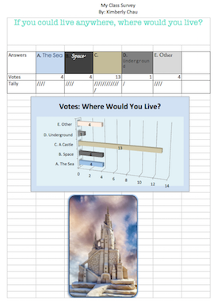
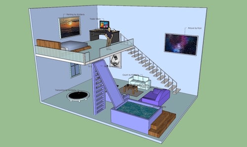
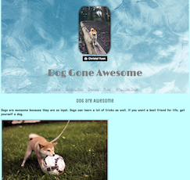

ATM
ATM is a program that stands for Applied Technology Magnet. It is a 3 year program that focuses on computers.
ATM is a program that stands for Applied Technology Magnet. It is a 3 year program that focuses on computers.
In 6th Grade, we learned how to type, how to be internet safe, how to use word, powerpoint, simple coding, excel, and storyboard that. Right below, you see a picture of a survery we recorded in excel.
In 7th Grade, we learned how to use Illustrator, Photoshop, InDesign, SketchUp, CodeHS, and Floorplanner. Underneath is a picutre of a group project we had to do in SketchUp.
In 8th Grade, we are learning CSS+HTML Code in Dash, Khan Acadamy, and Visual Studio Code. Down below, there is a picture of a website I made on dogs.
We also did a project based of the the Teens Dream Video Contest. My video was on community littering and was submitted to the actual Teens Dream Video Contest. My goal is to stop community littering and to have the whole community help with trash removal. In this unit, I learned various film shots, how to thoroughly plan, and how to edit in iMovie. This is our first project from the film unit.
>The last project we did in the video and audio production unit was the "Alpaca Project". For this project, we had to create a soundtrack for this animation, including moods. In this unit, we have created a few soundtracks, videos, and songs. Overall, this unit has been very fun and enjoyable. Down below is my interpretation of what the "Alpaca" video sounded like to me.
| 6th Grade | 7th Grade | 8th Grade |
|---|---|---|
| Typing | Illustrator | HTML Code |
| Internet Safety | Photoshop | CSS Code |
| Word | InDesign | Dash Coding |
| Powerpoint | SketchUp | Khan Acadamy Coding |
| Excel | Floorplanner | Visual Studio Code |
I think ATM is a great program and I am happy to be in this program. It is very helpful and useful to know and use different things on the computer and internet. Technology can be fun, interesting, and challenging. It has helped me in my daily life when using technology to help better understand it and lets me help others. I am glad to be in the ATM program and to the teachers for the knowledge and understanding.